Японский гастробар на петровке
Галерея

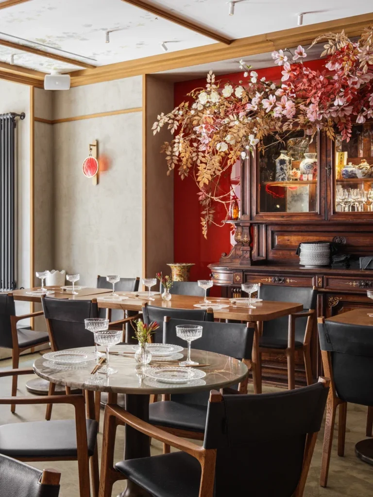
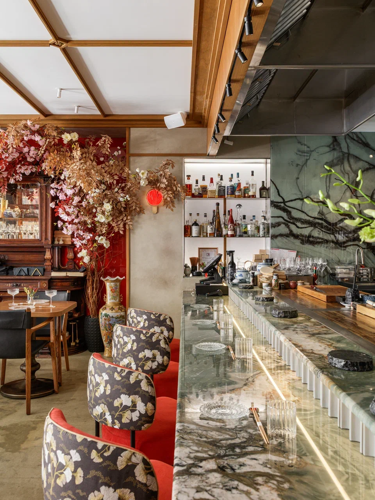
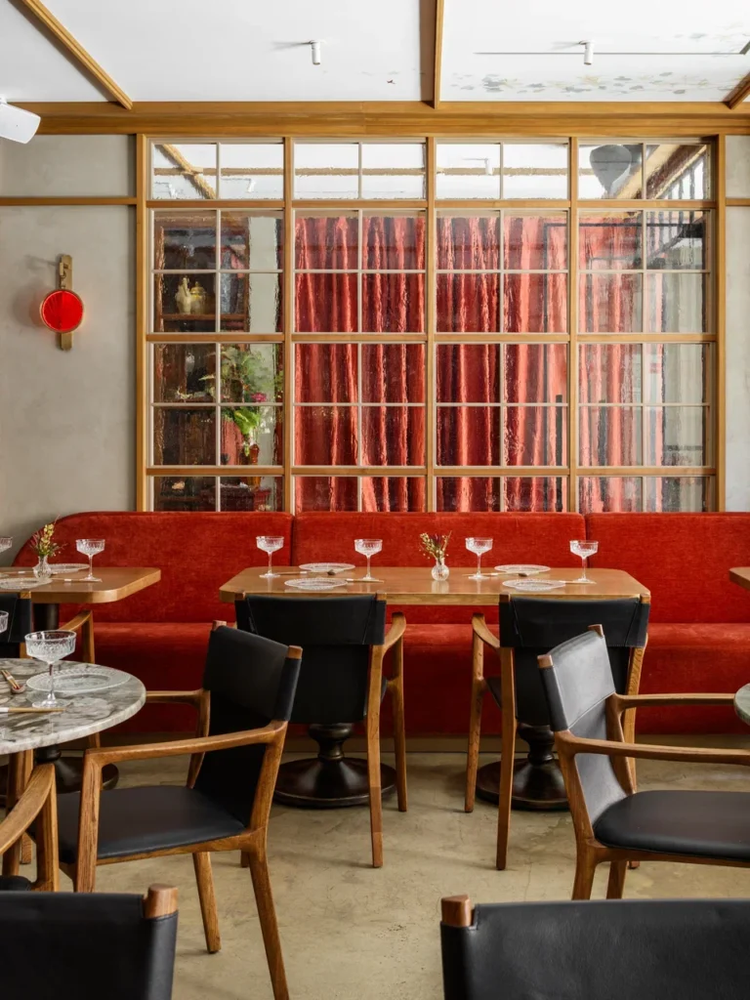
Основные задачи
Спроектировать интерьер азиатского гастробара на Петровке, визуально воплотив концепцию культурного
синтеза. Пространство должно рассказывать историю «сына японского императора в Европе» — тонкий диалог
между восточным минимализмом и западным аристократизмом.
Ключевые требования:
- Синтез стилей: Объединить эстетику японских традиций (перегородки сёдзи, натуральное дерево) с европейской монументальностью.
- Создание метанарратива: Интегрировать тему метаморфоз в декор (росписи, детали) и подчеркнуть идею внутреннего роста.
- Работа с атмосферой: Создать «камерное, шкатулочное» пространство через тактильные материалы: антикварную мебель, ручное стекло, дуб и контрастный красный бархат.
- Цельность: Обеспечить визуальный ритм и легкость интерьера при высокой насыщенности деталями.
Результаты проекта
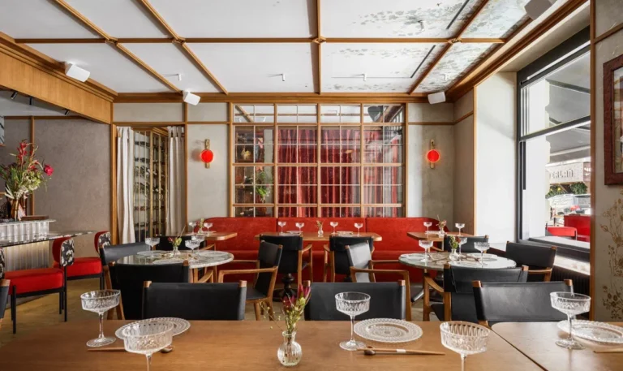
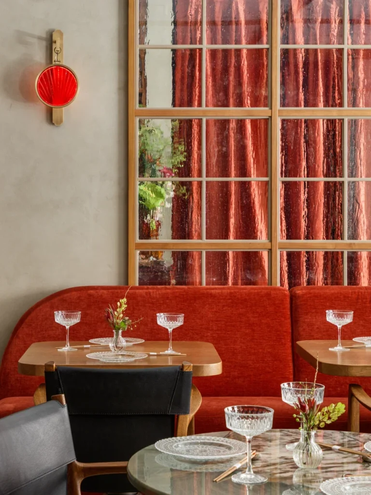
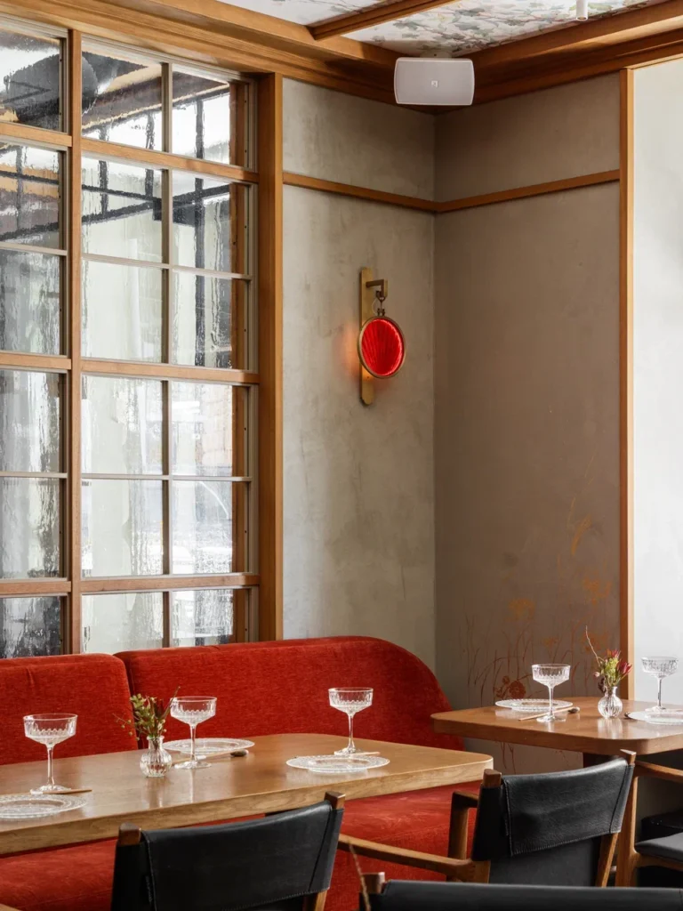
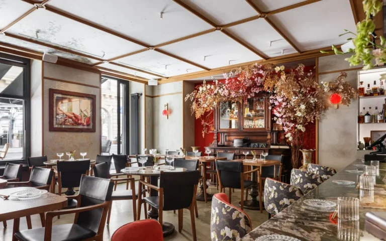
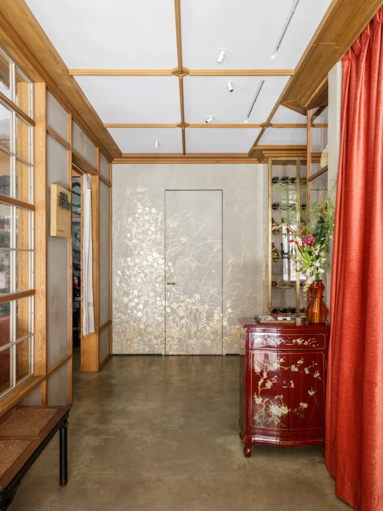
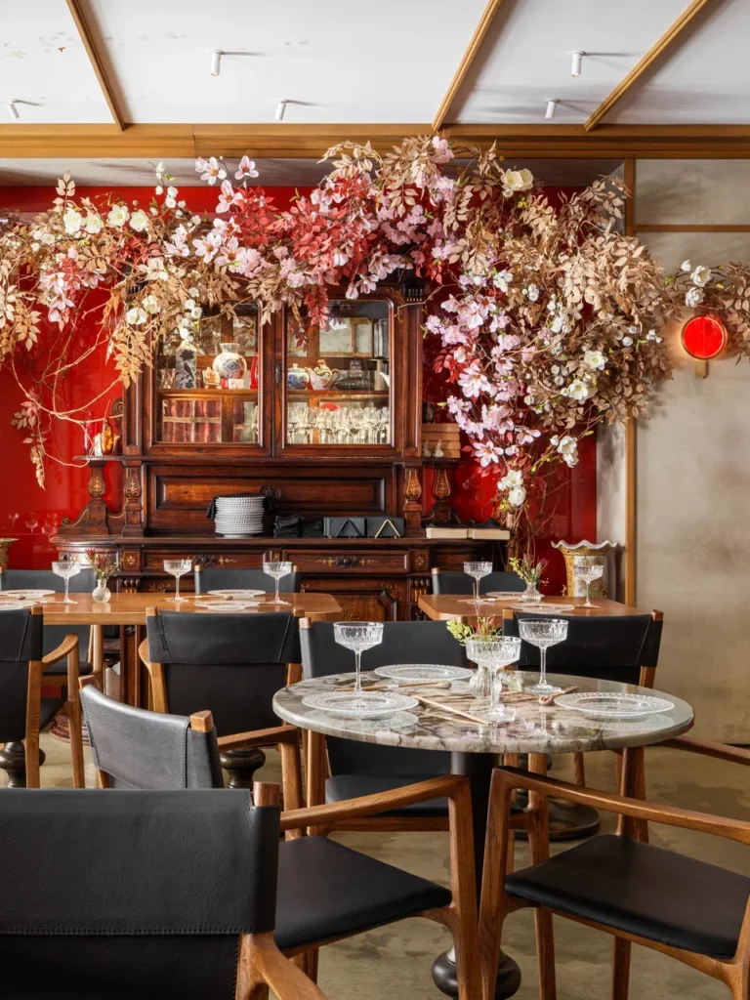
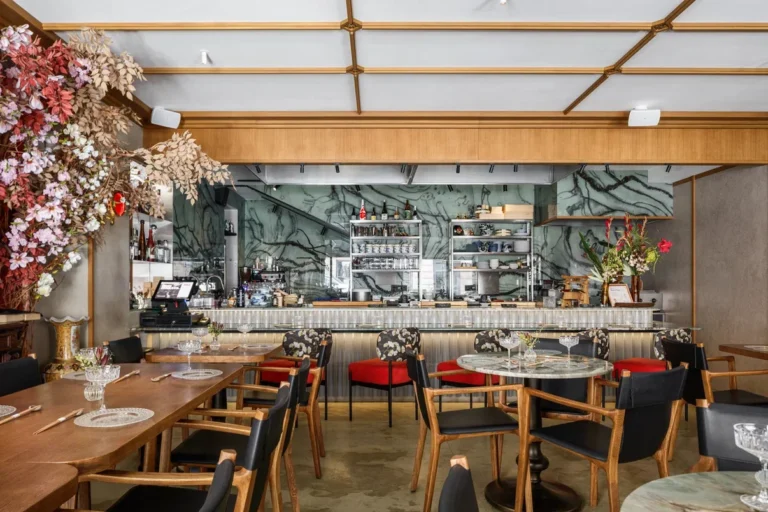
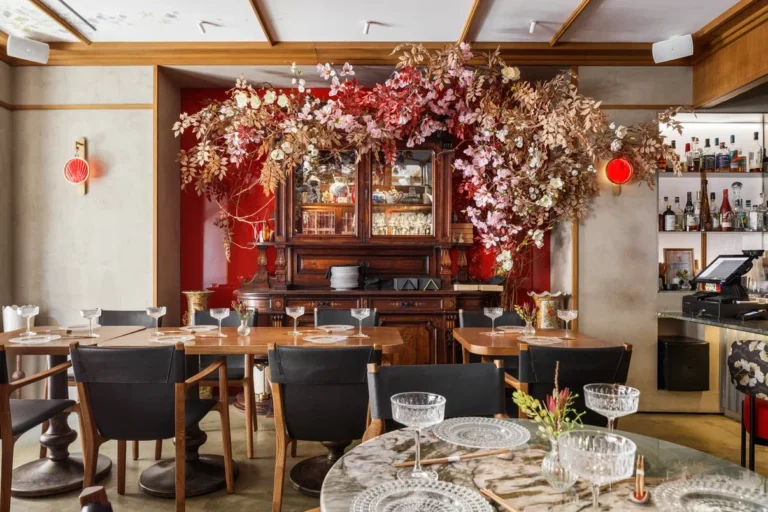
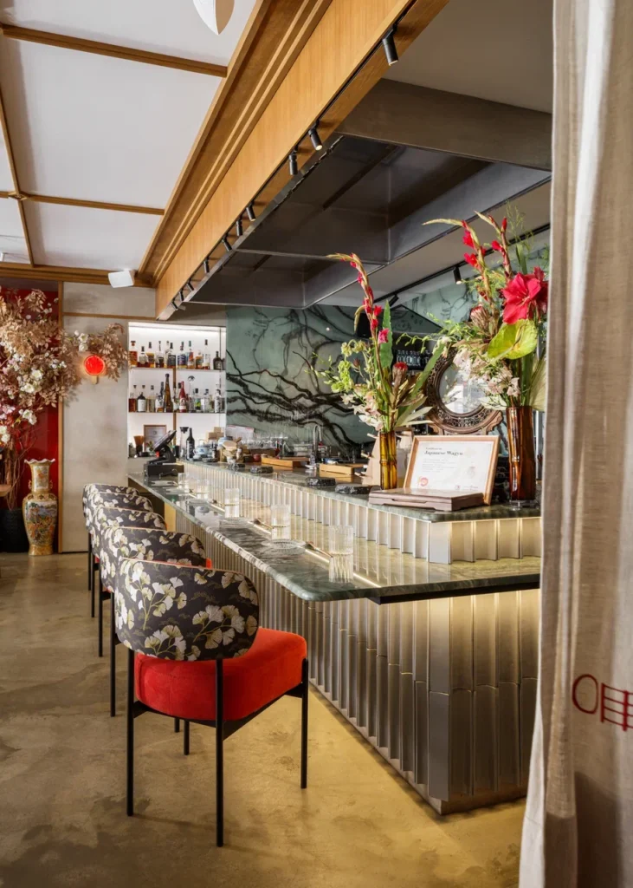
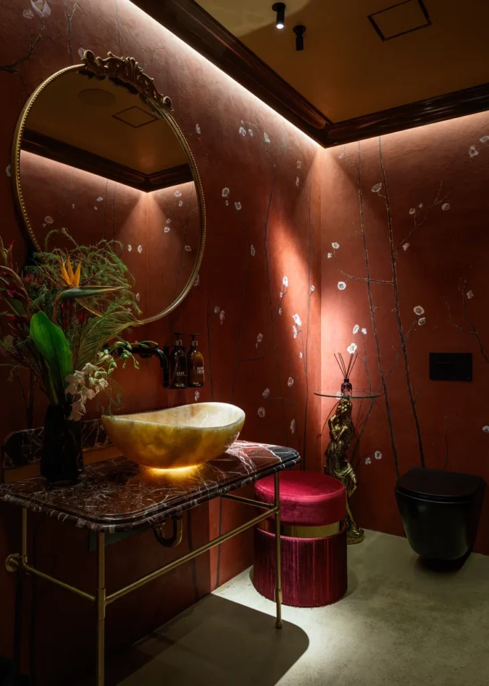
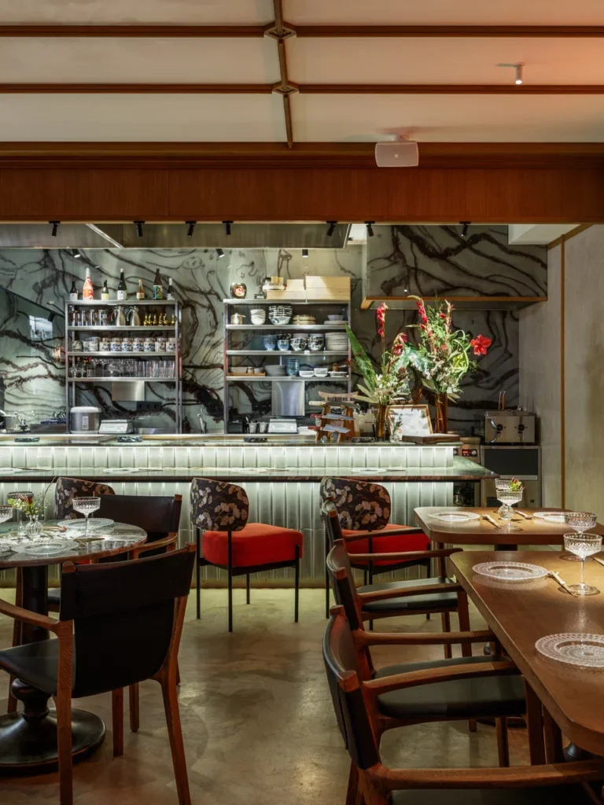
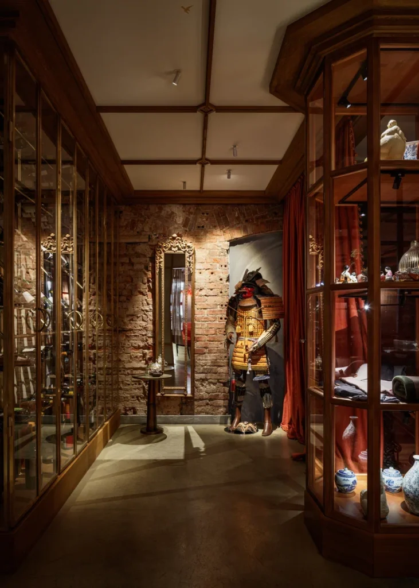
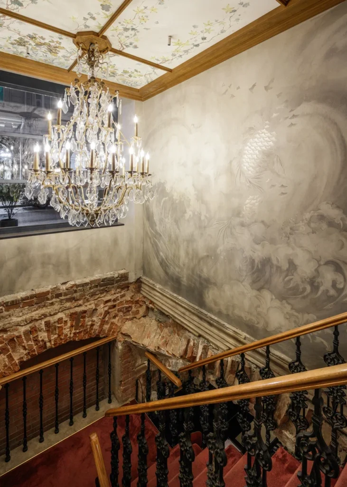